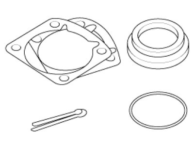
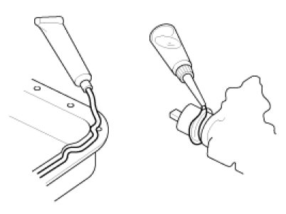

Replacement
Replacement
Standard values, such as torques and certain adjustments, must be strictly observed in the reassembly of all parts.
If removed, the following parts should always be replaced with new ones.
1. Oil seals
2. Gaskets
3. O-rings
4. Lock washers
5. Cotter pins (split pins)
6. Plastic nuts

Depending on their location.
7. Sealant should be applied to gaskets.
8. Oil should be applied to the moving components of parts.
9. Specified oil or grease should be applied to the prescribed locations (oil seals, etc) before assembly.
